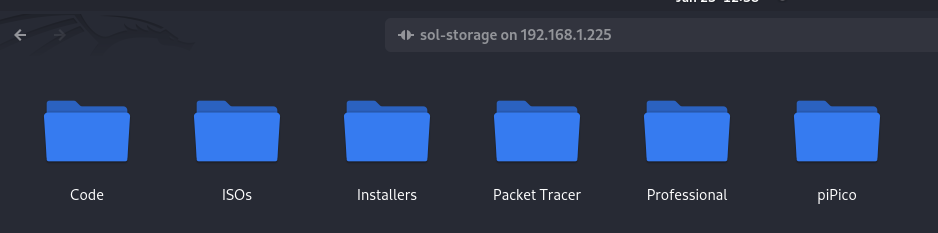

My Home Lab

I have built a server with 32GB of DDR3 RAM, an intel core i7-4790, 2 1TB hard drives configured in software RAID1 for redundancy and 1 500GB HDD + 1 500GB SSD also configured in RAID1 running as a proxmox boot drive.

On one installation of ubuntu server I am running a 2 samba fileshares in an unbuntu server virtual machine on proxmox which I am using to store family photos and my various IT related files that I need to access from anywhere